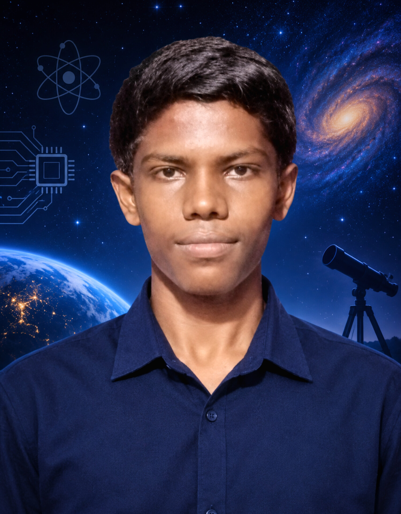

ECE student today.
Future Astronomer.
Balakrishnan M. — Diploma in Electronics & Communication Engineering, 2nd year, Sankar Polytechnic College
I am an Electronics and Communication Engineering diploma student with a long-term interest in astronomy, astrophysics and space science. My journey begins with engineering — learning how electronic systems work, how sensors collect information, and how programming can be used to process and understand data.
Alongside my ECE studies, I am gradually building a broader scientific foundation in physics, mathematics, programming, astronomy and space technology. I use projects, experiments, independent learning and science communication to connect what I learn in the classroom with real scientific and engineering problems.
My ultimate goal is to continue from engineering into higher studies in physics and astrophysics and eventually pursue a career in astronomy. This portfolio documents that process honestly — what I have built, what I am learning, what I have discovered through experimentation, and the areas I still need to explore.

Electronics & Communication Engineering Student
Evidence, not exaggeration
This portfolio exists because a one-page resume cannot fully represent a technical and scientific learning journey. It is designed to show not only the finished results, but also the process behind them. Everything here is labelled honestly: what I have completed, what I am currently learning, and what remains a future goal.
Built & documented
Real projects, experiments and coursework I have completed, with attention to the problems encountered, methods used, results obtained and limitations of the work — rather than showing only successful outcomes.
In progress
Subjects, tools and scientific concepts that I am actively studying. This includes electronics, programming, physics, mathematics, astronomy and topics such as nuclear astrophysics that help me gradually strengthen my scientific foundation.
Where I'm headed
Astronomy and astrophysics are my long-term career direction. Becoming an astronomer is a goal I am working toward through education, technical projects, scientific learning and continuous exploration — not a professional title I claim today.
Electronics → Programming → Space → Astronomy
My formal background is in Electronics and Communication Engineering. Rather than viewing engineering and astronomy as separate interests, I see electronics and programming as practical tools that can support scientific exploration. Sensors, embedded systems, computation and data analysis are all connected to the way modern scientific instruments collect, process and interpret information.
I am therefore using my ECE foundation as one of the stepping stones toward astronomy and astrophysics. As I progress, I am expanding my knowledge of physics, mathematics, programming and astronomical data analysis so that I can eventually approach astronomy from a stronger interdisciplinary foundation.
A few things I've built
My projects are a way of turning concepts into practical experiments. Some explore electronics and embedded systems, while others focus on astronomy, web development or data analysis. Together, they represent different stages of my technical learning and my growing interest in space science.
Solar Tracking & Receiving System
An Arduino-based proof-of-concept exploring sensor-guided receiver alignment. The project uses light sensors and a servo mechanism to investigate how a system can automatically respond to the apparent position of a light source, inspired by the broader concept of Space-Based Solar Power.
View internship page →Celestial Gallery
An astronomy web application designed to present curated celestial objects and related information through organised gallery pages. The project combines web-development skills with my interest in astronomy and science communication, creating an accessible way to explore astronomical subjects.
View project →Virgo Constellation Data Analysis
A small astronomy data-analysis project based on a Hubble Space Telescope image of the Virgo region. The project involves creating and examining a dataset from astronomical observations and applying statistical and visual analysis to identify patterns within the collected data.
View project →What else is on this site
The rest of this portfolio provides a more detailed view of my development beyond individual projects — including what I am studying, the experiments I conduct, certifications I have completed and the scientific interests that shape my long-term direction.
Learning log
What I'm studying right now across physics, mathematics, astronomy, electronics and programming, including the concepts I am developing independently alongside my formal ECE education.
View learning log →Certifications
Courses and certifications that support my technical and scientific development, including Nuclear Astrophysics, Python Programming and soft-skills coursework.
View certifications →